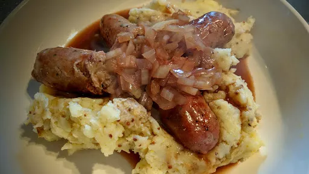

Sausages & mash with cumberland sauce
25 mins
Serves 4
Gluten Free

Gluten-free: use gluten-free plain flour in the gravy and gluten-free sausages and stock cubes.
Ingredients
-
12
good quality sausages
-
1
tbsp olive oil to fry
-
4-5
medium potatoes
-
3
tbsp cream
Cumberland sauce
-
1
tbsp olive oil
-
1
onion, sliced
-
1
tbsp plain flour
-
½
mug Marsala wine (or sherry)
- zest of lemon
-
2
tbsp blackcurrant jelly
-
1
mug water
-
1
beef stock cube
Instructions
- Preheat the oven to 180°C/Gas 6. Put the sausages on a roasting tray and sprinkle with oil and salt and pepper. Place in the oven for 40 minutes
.
- Peel the potatoes and cut into 2 cm chunks. Place in boiling water and then simmer for 10 minutes
. Drain and return to the pan. Mash with the cream, or butter, and season with salt and pepper. Set to one side until needed.
- Meanwhile, make the sauce. Heat the oil in a frying pan and fry the onions until it begins to soften. Add the flour and cook for 30 seconds
, mixing thoroughly. Add the rest of the ingredients and bring to the boil. The sauce should thicken slightly. Simmer for 2-3 minutes
.
- Serve the potatoes and sauce with the sausages.
Nosh: Quick & Easy
Short Link
Long Link